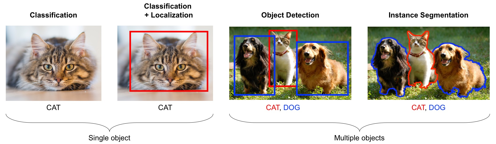
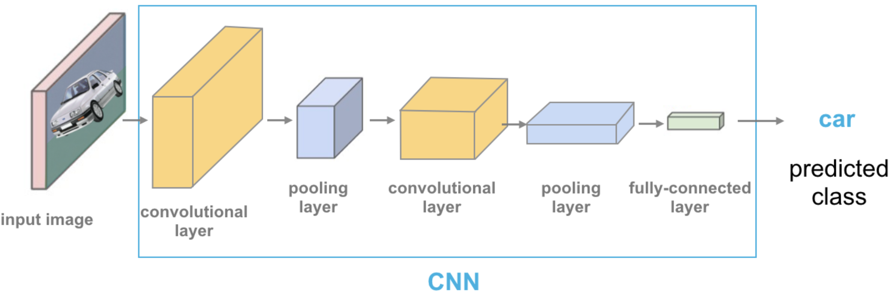

Lecture 18: Multi-class classification and introduction to computer vision#
UBC 2023-24
Instructor: Varada Kolhatkar and Andrew Roth
Imports and LO#
Imports#
import glob
import copy
import os, sys
import time
import matplotlib.pyplot as plt
import numpy as np
import pandas as pd
sys.path.append(os.path.join(os.path.abspath("."), "code"))
from plotting_functions import *
from sklearn import datasets
from sklearn.dummy import DummyClassifier
from sklearn.linear_model import LogisticRegression
from sklearn.metrics import (
classification_report,
confusion_matrix
)
from sklearn.model_selection import train_test_split
from sklearn.pipeline import Pipeline, make_pipeline
from sklearn.svm import SVC
from sklearn.linear_model import LogisticRegression
from sklearn.pipeline import Pipeline, make_pipeline
from sklearn.preprocessing import StandardScaler
Learning objectives#
Apply classifiers to multi-class classification algorithms.
Explain the role of neural networks in machine learning, and the pros/cons of using them.
Explain why the methods we’ve learned previously would not be effective on image data.
Apply pre-trained neural networks to classification and regression problems.
Utilize pre-trained networks as feature extractors and combine them with models we’ve learned previously.
❓❓ Questions for you#
iClicker Exercise 19.1#
iClicker cloud join link: https://join.iclicker.com/SNBF
Select all of the following statements which are TRUE.
(A) It’s possible to use word2vec embedding representations for text classification instead of bag-of-words representation.
(B) The topic model approach we used in the last lecture, Latent Dirichlet Allocation (LDA), is an unsupervised approach.
(C) In an LDA topic model, the same word can be associated with two different topics with high probability.
(D) In an LDA topic model, a document is a mixture of multiple topics.
(E) If I train a topic model on a large collection of news articles with K = 10, I would get 10 topic labels (e.g., sports, culture, politics, finance) as output.
Multi-class, meta-strategies#
We have seen examples of multi-class classification but we have not explicitly talked about how different models tackle it.
“ImageNet” computer vision competition, for example, has 1000 classes
Can we use decision trees or KNNs for image classification on ImageNet?
What about decision trees or random forests?
Many linear classification models don’t extend naturally to the multiclass case.
A common technique is to reduce multiclass classication into several instances of binary classification problems.
Two kind of “hacky” ways to reduce multi-class classification into binary classification:
the one-vs.-rest approach
the one-vs.-one approach
One vs. Rest#
1v{2,3}, 2v{1,3}, 3v{1,2}
Learn a binary model for each class which tries to separate that class from all of the other classes.
If you have \(k\) classes, it’ll train \(k\) binary classifiers, one for each class.
Trained on imbalanced datasets containing all examples.
Given a test point, get scores from all binary classifiers (e.g., raw scores for logistic regression).
The classifier which has the highest score for this class “wins” and that’s going to be the prediction for this class.
Since we have one binary classifier per class, for each class, we have coefficients per feature and an intercept.
Note
Note that there is also a multinomial logistic regression also called as the maxent classifier. This is different than the above multi-class meta strategies.
Let’s create some synthetic data with two features and three classes.
import mglearn
from sklearn.datasets import make_blobs
X, y = make_blobs(centers=3, n_samples=120, random_state=42)
X_train, X_test, y_train, y_test = train_test_split(
X, y, test_size=0.2, random_state=123
)
mglearn.discrete_scatter(X_train[:, 0], X_train[:, 1], y_train)
plt.xlabel("Feature 0")
plt.ylabel("Feature 1")
plt.legend(["Class 0", "Class 1", "Class 2"]);
lr = LogisticRegression(max_iter=2000, multi_class="ovr")
lr.fit(X_train, y_train)
print("Coefficient shape: ", lr.coef_.shape)
print("Intercept shape: ", lr.intercept_.shape)
Coefficient shape: (3, 2)
Intercept shape: (3,)
This learns three binary linear models.
So we have coefficients for two features for each of these three linear models.
Also we have three intercepts, one for each class.
# Function definition in code/plotting_functions.py
plot_multiclass_lr_ovr(lr, X_train, y_train, 3)
How would you classify the following points?
The answer is pick the class with the highest value for the classification formula.
test_points = [[-4.0, 12], [-2, 0.0], [-8, 3.0], [4, 8.5], [0, -7]]
plot_multiclass_lr_ovr(lr, X_train, y_train, 3, test_points)
plot_multiclass_lr_ovr(lr, X_train, y_train, 3, test_points, decision_boundary=True)
Let’s calculate the raw scores for a test point.
test_points[4]
[0, -7]
lr.coef_
array([[-0.65123329, 1.0536117 ],
[ 1.35418019, -0.28647501],
[-0.63320669, -0.72513556]])
lr.intercept_
array([-5.42626721, 0.21616562, -2.46941346])
test_points[4]@lr.coef_.T + lr.intercept_
array([-12.8015491 , 2.22149069, 2.60653543])
lr.classes_
array([0, 1, 2])
lr.predict_proba([test_points[4]])
array([[1.50344795e-06, 4.92058424e-01, 5.07940073e-01]])
One Vs. One approach#
Build a binary model for each pair of classes.
1v2, 1v3, 2v3
Trains \(\frac{n \times (n-1)}{2}\) binary classifiers
Trained on relatively balanced subsets
One Vs. One prediction#
Apply all of the classifiers on the test example.
Count how often each class was predicted.
Predict the class with most votes.
Using OVR and OVO as wrappers#
You can use these strategies as meta-strategies for any binary classifiers.
When do we use
OneVsRestClassifierandOneVsOneClassifierIt’s not that likely for you to need
OneVsRestClassifierorOneVsOneClassifierbecause most of the methods you’ll use will have native multi-class support.However, it’s good to know in case you ever need to extend a binary classifier (perhaps one you’ve implemented on your own).
from sklearn.multiclass import OneVsOneClassifier, OneVsRestClassifier
# Let's examine the time taken by OneVsRestClassifier and OneVsOneClassifier
# generate blobs with fixed random generator
X_multi, y_multi = make_blobs(n_samples=1000, centers=20, random_state=300)
X_train_multi, X_test_multi, y_train_multi, y_test_multi = train_test_split(
X_multi, y_multi
)
plt.scatter(*X_multi.T, c=y_multi, marker=".", cmap="Dark2");
model = OneVsOneClassifier(LogisticRegression())
%timeit model.fit(X_train_multi, y_train_multi);
print("With OVO wrapper")
print(model.score(X_train_multi, y_train_multi))
print(model.score(X_test_multi, y_test_multi))
244 ms ± 2.15 ms per loop (mean ± std. dev. of 7 runs, 1 loop each)
With OVO wrapper
0.8133333333333334
0.764
model = OneVsRestClassifier(LogisticRegression())
%timeit model.fit(X_train_multi, y_train_multi);
print("With OVR wrapper")
print(model.score(X_train_multi, y_train_multi))
print(model.score(X_test_multi, y_test_multi))
54 ms ± 1.18 ms per loop (mean ± std. dev. of 7 runs, 10 loops each)
With OVR wrapper
0.736
0.628
As expected OVO takes more time compared to OVR.
Here you will find summary of how
scikit-learnhandles multi-class classification for different classifiers.
❓❓ Questions for you#
iClicker Exercise 19.2#
iClicker cloud join link: https://join.iclicker.com/SNBF
Select all of the following statements which are TRUE.
(A) One-vs.-one strategy uses all the available data when training each binary classifier.
(B) For a 100-class classification problem, one-vs.-rest multi-class strategy will create 100 binary classifiers.
# ?LogisticRegression
We can see that there’s a
multi_classparameter, that can be set to'ovr'or'multinomial', or you can have it automatically choose between the two, which is the default.In CPSC 340 the difference between these two approaches is discussed in detail.
Introduction to neural networks#
Very popular these days under the name deep learning.
Neural networks apply a sequence of transformations on your input data.
They can be viewed a generalization of linear models where we apply a series of transformations.
Here is graphical representation of a logistic regression model.
We have 4 features: x[0], x[1], x[2], x[3]
import mglearn
mglearn.plots.plot_logistic_regression_graph()
Below we are adding one “layer” of transformations in between features and the target.
We are repeating the the process of computing the weighted sum multiple times.
The hidden units (e.g., h[1], h[2], …) represent the intermediate processing steps.
mglearn.plots.plot_single_hidden_layer_graph()
Now we are adding one more layer of transformations.
mglearn.plots.plot_two_hidden_layer_graph()
At a very high level you can also think of them as
Pipelinesinsklearn.A neural network is a model that’s sort of like its own pipeline
It involves a series of transformations (“layers”) internally.
The output is the prediction.
Important question: how many features before/after transformation.
e.g. scaling doesn’t change the number of features
OHE increases the number of features
With a neural net, you specify the number of features after each transformation.
In the above, it goes from 4 to 3 to 3 to 1.
To make them really powerful compared to the linear models, we apply a non-linear function to the weighted sum for each hidden node.
Terminology#
Neural network = neural net
Deep learning ~ using neural networks
Why neural networks?#
They can learn very complex functions.
The fundamental tradeoff is primarily controlled by the number of layers and layer sizes.
More layers / bigger layers –> more complex model.
You can generally get a model that will not underfit.
Why neural networks?#
The work really well for structured data:
1D sequence, e.g. timeseries, language
2D image
3D image or video
They’ve had some incredible successes in the last 10 years.
Transfer learning (coming later today) is really useful.
Why not neural networks?#
Often they require a lot of data.
They require a lot of compute time, and, to be faster, specialized hardware called GPUs.
They have huge numbers of hyperparameters are a huge pain to tune.
Think of each layer having hyperparameters, plus some overall hyperparameters.
Being slow compounds this problem.
They are not interpretable.
Why not neural networks?#
When you call
fit, you are not guaranteed to get the optimal.There are now a bunch of hyperparameters specific to
fit, rather than the model.You never really know if
fitwas successful or not.You never really know if you should have run
fitfor longer.
I don’t recommend training them on your own without further training
Take CPSC 340 and other courses if you’re interested.
I’ll show you some ways to use neural networks without calling
fit.
Deep learning software#
scikit-learn has MLPRegressor and MLPClassifier but they aren’t very flexible.
In general you’ll want to leave the scikit-learn ecosystem when using neural networks.
Fun fact: these classes were contributed to scikit-learn by a UBC graduate student.
There’s been a lot of deep learning software out there.
The current big players are:
Both are heavily used in industry.
If interested, see comparison of deep learning software.
Break (5 min)#

Introduction to computer vision#
Computer vision refers to understanding images/videos, usually using ML/AI.
Computer vision has many tasks of interest:
image classification: is this a cat or a dog?
object localization: where is the cat in this image?
object detection: What are the various objects in the image?
instance segmentation: What are the shapes of these various objects in the image?
and much more…

Source: https://learning.oreilly.com/library/view/python-advanced-guide/9781789957211/
In the last decade this field has been dominated by deep learning.
We will explore image classification.
Dataset#
For this demonstration I’m using a subset of Kaggle’s Animal Faces dataset.
Usually structured data such as this one doesn’t come in CSV files.
Also, if you are working on image datasets in the real world, they are going to be huge datasets and you do not want to load the full dataset at once in the memory.
So usually you work on small batches.
You are not expected to understand all the code below. But I’m including it for your reference.
# Attribution: [Code from PyTorch docs](https://pytorch.org/tutorials/beginner/transfer_learning_tutorial.html?highlight=transfer%20learning)
import torch
import torch.nn as nn
import torch.optim as optim
import torchvision
from torch.optim import lr_scheduler
from torchvision import datasets, models, transforms, utils
IMAGE_SIZE = 200
data_transforms_bw = {
"train": transforms.Compose(
[
transforms.Resize((IMAGE_SIZE, IMAGE_SIZE)),
transforms.Grayscale(num_output_channels=1),
transforms.ToTensor(),
]
),
"valid": transforms.Compose(
[
transforms.Resize((IMAGE_SIZE, IMAGE_SIZE)),
transforms.Grayscale(num_output_channels=1),
transforms.ToTensor(),
]
),
}
data_dir = "data/animal_faces"
image_datasets_bw = {
x: datasets.ImageFolder(os.path.join(data_dir, x), data_transforms_bw[x])
for x in ["train", "valid"]
}
dataloaders_bw = {
x: torch.utils.data.DataLoader(
image_datasets_bw[x], batch_size=24, shuffle=True, num_workers=4
)
for x in ["train", "valid"]
}
dataset_sizes = {x: len(image_datasets_bw[x]) for x in ["train", "valid"]}
class_names = image_datasets_bw["train"].classes
# Get a batch of training data
inputs_bw, classes = next(iter(dataloaders_bw["train"]))
plt.figure(figsize=(10, 8)); plt.axis("off"); plt.title("Sample Training Images")
plt.imshow(np.transpose(utils.make_grid(inputs_bw, padding=1, normalize=True),(1, 2, 0)));
print(f"Classes: {image_datasets_bw['train'].classes}")
print(f"Class count: {image_datasets_bw['train'].targets.count(0)}, {image_datasets_bw['train'].targets.count(1)}, {image_datasets_bw['train'].targets.count(2)}")
print(f"Samples:", len(image_datasets_bw["train"]))
print(f"First sample: {image_datasets_bw['train'].samples[0]}")
Classes: ['cat', 'dog', 'wild']
Class count: 50, 50, 50
Samples: 150
First sample: ('data/animal_faces/train/cat/flickr_cat_000002.jpg', 0)
Logistic regression with flatten representation of images#
How can we train traditional ML models designed for tabular data on image data?
Let’s flatten the images and trained Logistic regression.
# This code flattens the images in train and validation sets.
# Again you're not expected to understand all the code.
flatten_transforms = transforms.Compose([
transforms.Resize((IMAGE_SIZE, IMAGE_SIZE)),
transforms.Grayscale(num_output_channels=1),
transforms.ToTensor(),
transforms.Lambda(torch.flatten)])
train_flatten = torchvision.datasets.ImageFolder(root='./data/animal_faces/train', transform=flatten_transforms)
valid_flatten = torchvision.datasets.ImageFolder(root='./data/animal_faces/valid', transform=flatten_transforms)
train_dataloader = torch.utils.data.DataLoader(train_flatten, batch_size=150, shuffle=True)
valid_dataloader = torch.utils.data.DataLoader(valid_flatten, batch_size=150, shuffle=True)
flatten_train, y_train = next(iter(train_dataloader))
flatten_valid, y_valid = next(iter(valid_dataloader))
flatten_train.numpy().shape
(150, 40000)
We have flattened representation (40_000 columns) for all 150 training images.
Let’s train dummy classifier and logistic regression on these flattened images.
dummy = DummyClassifier()
dummy.fit(flatten_train.numpy(), y_train)
dummy.score(flatten_train.numpy(), y_train)
0.3333333333333333
dummy.score(flatten_valid.numpy(), y_train)
0.3333333333333333
lr_flatten_pipe = make_pipeline(StandardScaler(), LogisticRegression(max_iter=3000))
lr_flatten_pipe.fit(flatten_train.numpy(), y_train)
Pipeline(steps=[('standardscaler', StandardScaler()),
('logisticregression', LogisticRegression(max_iter=3000))])In a Jupyter environment, please rerun this cell to show the HTML representation or trust the notebook. On GitHub, the HTML representation is unable to render, please try loading this page with nbviewer.org.
Pipeline(steps=[('standardscaler', StandardScaler()),
('logisticregression', LogisticRegression(max_iter=3000))])StandardScaler()
LogisticRegression(max_iter=3000)
lr_flatten_pipe.score(flatten_train.numpy(), y_train)
1.0
lr_flatten_pipe.score(flatten_valid.numpy(), y_valid)
0.66
The model is overfitting.
We are getting not so great validation results.
Why flattening images is a bad idea?
There is some structure in this data.
By “flattening” the image we throw away useful information.
This is what we see.
plt.rcParams["image.cmap"] = "gray"
plt.figure(figsize=(3, 3)); plt.axis("off"); plt.title("Example image")
plt.imshow(flatten_train[4].reshape(200,200));
This is what the computer sees:
flatten_train[4].numpy()
array([1., 1., 1., ..., 1., 1., 1.], dtype=float32)
Hard to classify this!
Convolutional neural networks (CNNs) can take in images without flattening them.
We won’t cover CNNs here, but they are in CPSC 340.
Transfer learning#
In practice, very few people train an entire CNN from scratch because it requires a large dataset, powerful computers, and a huge amount of human effort to train the model.
Instead, a common practice is to download a pre-trained model and fine tune it for your task.
This is called transfer learning.
Transfer learning is one of the most common techniques used in the context of computer vision and natural language processing.
In the last lecture we used pre-trained embeddings to create text representations.
There are many deep learning architectures out there that have been very successful across a wide range of problem, e.g.: AlexNet, VGG, ResNet, Inception, MobileNet, etc.
Many of these are trained on famous datasets such as ImageNet (which contains 1.2 million labelled images with 1000 categories)
ImageNet#
ImageNet is an image dataset that became a very popular benchmark in the field ~10 years ago.
There are 14 million images and 1000 classes.
Here are some example classes.
Wikipedia article on ImageNet
with open("data/imagenet_classes.txt") as f:
classes = [line.strip() for line in f.readlines()]
classes[100:110]
['black swan, Cygnus atratus',
'tusker',
'echidna, spiny anteater, anteater',
'platypus, duckbill, duckbilled platypus, duck-billed platypus, Ornithorhynchus anatinus',
'wallaby, brush kangaroo',
'koala, koala bear, kangaroo bear, native bear, Phascolarctos cinereus',
'wombat',
'jellyfish',
'sea anemone, anemone',
'brain coral']
The idea of transfer learning is instead of developing a machine learning model from scratch, you use these available pre-trained models for your tasks either directly or by fine tuning them.
There are three common ways to use transfer learning in computer vision
Using pre-trained models out-of-the-box
Using pre-trained models as feature extractor and training your own model with these features
Starting with weights of pre-trained models and fine-tuning the weights for your task.
We will explore the first two approaches.
Using pre-trained models out-of-the-box#
Remember this example I showed you in the intro video (our very first lecture)?
We used a pre-trained model vgg16 which is trained on the ImageNet data.
We preprocess the given image.
We get prediction from this pre-trained model on a given image along with prediction probabilities.
For a given image, this model will spit out one of the 1000 classes from ImageNet.

Source: https://cezannec.github.io/Convolutional_Neural_Networks/
def classify_image(img, topn = 4):
clf = vgg16(weights='VGG16_Weights.DEFAULT') # initialize the classifier with VGG16 weights
preprocess = transforms.Compose([
transforms.Resize(299),
transforms.CenterCrop(299),
transforms.ToTensor(),
transforms.Normalize(mean=[0.485, 0.456, 0.406],
std=[0.229, 0.224, 0.225]),])
with open('data/imagenet_classes.txt') as f:
classes = [line.strip() for line in f.readlines()]
img_t = preprocess(img)
batch_t = torch.unsqueeze(img_t, 0)
clf.eval()
output = clf(batch_t)
_, indices = torch.sort(output, descending=True)
probabilities = torch.nn.functional.softmax(output, dim=1)
d = {'Class': [classes[idx] for idx in indices[0][:topn]],
'Probability score': [np.round(probabilities[0, idx].item(),3) for idx in indices[0][:topn]]}
df = pd.DataFrame(d, columns = ['Class','Probability score'])
return df
import torch
from PIL import Image
from torchvision import transforms
from torchvision.models import vgg16
# Predict labels with associated probabilities for unseen images
images = glob.glob("data/test_images/*.*")
for image in images:
img = Image.open(image)
img.load()
plt.imshow(img)
plt.show()
df = classify_image(img)
print(df.to_string(index=False))
print("--------------------------------------------------------------")
Class Probability score
cheetah, chetah, Acinonyx jubatus 0.983
leopard, Panthera pardus 0.012
jaguar, panther, Panthera onca, Felis onca 0.004
snow leopard, ounce, Panthera uncia 0.001
--------------------------------------------------------------
Class Probability score
tiger cat 0.353
tabby, tabby cat 0.207
lynx, catamount 0.050
Pembroke, Pembroke Welsh corgi 0.046
--------------------------------------------------------------
Class Probability score
macaque 0.714
patas, hussar monkey, Erythrocebus patas 0.122
proboscis monkey, Nasalis larvatus 0.098
guenon, guenon monkey 0.017
--------------------------------------------------------------
Class Probability score
Walker hound, Walker foxhound 0.580
English foxhound 0.091
EntleBucher 0.080
beagle 0.065
--------------------------------------------------------------
We got these predictions without “doing the ML ourselves”.
We are using pre-trained
vgg16model which is available intorchvision.torchvisionhas many such pre-trained models available that have been very successful across a wide range of tasks: AlexNet, VGG, ResNet, Inception, MobileNet, etc.Many of these models have been pre-trained on famous datasets like ImageNet.
So if we use them out-of-the-box, they will give us one of the ImageNet classes as classification.
Let’s see what labels this pre-trained model give us for some images which are very different from the training set.
# Predict labels with associated probabilities for unseen images
images = glob.glob("data/UBC_img/*.*")
for image in images:
img = Image.open(image)
img.load()
plt.imshow(img)
plt.show()
df = classify_image(img)
print(df.to_string(index=False))
print("--------------------------------------------------------------")
Class Probability score
fig 0.637
pomegranate 0.193
grocery store, grocery, food market, market 0.041
crate 0.023
--------------------------------------------------------------
Class Probability score
toilet seat 0.171
safety pin 0.060
bannister, banister, balustrade, balusters, handrail 0.039
bubble 0.035
--------------------------------------------------------------
Class Probability score
worm fence, snake fence, snake-rail fence, Virginia fence 0.202
barn 0.036
sorrel 0.033
valley, vale 0.029
--------------------------------------------------------------
Class Probability score
patio, terrace 0.213
fountain 0.164
lakeside, lakeshore 0.097
sundial 0.088
--------------------------------------------------------------
It’s not doing very well here because ImageNet don’t have proper classes for these images.
Here we are using pre-trained models out-of-the-box.
Can we use pre-trained models for our own classification problem with our classes?
Yes!!
Using pre-trained models as feature extractor#
Let’s use pre-trained models to extract features.
We will pass our specific data through a pre-trained network to get a feature vector for each example in the data.
The feature vector is usually extracted from the last layer, before the classification layer from the pre-trained network.
You can think of each layer a transformer applying some transformations on the input received to that later.
Source: https://cezannec.github.io/Convolutional_Neural_Networks/
Once we extract these feature vectors for all images in our training data, we can train a machine learning classifier such as logistic regression or random forest.
This classifier will be trained on our classes using feature representations extracted from the pre-trained models.
Let’s try this out.
It’s better to train such models with GPU. Since our dataset is quite small, we won’t have problems running it on a CPU.
device = torch.device('cuda' if torch.cuda.is_available() else 'cpu')
print(f"Using device: {device.type}")
Using device: cpu
Reading the data#
Let’s read the data. Before we just used 1 colour channel because we wanted to flatten the representation.
Here, I’m using all three colour channels.
Let’s read and prepare the data. (You are not expected to understand this code.)
# Attribution: [Code from PyTorch docs](https://pytorch.org/tutorials/beginner/transfer_learning_tutorial.html?highlight=transfer%20learning)
IMAGE_SIZE = 200
BATCH_SIZE = 64
data_transforms = {
"train": transforms.Compose(
[
# transforms.RandomResizedCrop(224),
# transforms.RandomHorizontalFlip(),
transforms.Resize((IMAGE_SIZE, IMAGE_SIZE)),
transforms.ToTensor(),
#transforms.Normalize([0.485, 0.456, 0.406], [0.229, 0.224, 0.225]),
transforms.Normalize([0.5, 0.5, 0.5], [0.5, 0.5, 0.5]),
]
),
"valid": transforms.Compose(
[
# transforms.Resize(256),
# transforms.CenterCrop(224),
transforms.Resize((IMAGE_SIZE, IMAGE_SIZE)),
transforms.ToTensor(),
# transforms.Normalize([0.485, 0.456, 0.406], [0.229, 0.224, 0.225]),
transforms.Normalize([0.5, 0.5, 0.5], [0.5, 0.5, 0.5]),
]
),
}
data_dir = "data/animal_faces"
image_datasets = {
x: datasets.ImageFolder(os.path.join(data_dir, x), data_transforms[x])
for x in ["train", "valid"]
}
dataloaders = {
x: torch.utils.data.DataLoader(
image_datasets[x], batch_size=BATCH_SIZE, shuffle=True, num_workers=4
)
for x in ["train", "valid"]
}
dataset_sizes = {x: len(image_datasets[x]) for x in ["train", "valid"]}
class_names = image_datasets["train"].classes
device = torch.device("cuda:0" if torch.cuda.is_available() else "cpu")
# Get a batch of training data
inputs, classes = next(iter(dataloaders["train"]))
plt.figure(figsize=(10, 8)); plt.axis("off"); plt.title("Sample Training Images")
plt.imshow(np.transpose(utils.make_grid(inputs, padding=1, normalize=True),(1, 2, 0)));
print(f"Classes: {image_datasets['train'].classes}")
print(f"Class count: {image_datasets['train'].targets.count(0)}, {image_datasets['train'].targets.count(1)}, {image_datasets['train'].targets.count(2)}")
print(f"Samples:", len(image_datasets["train"]))
print(f"First sample: {image_datasets['train'].samples[0]}")
Classes: ['cat', 'dog', 'wild']
Class count: 50, 50, 50
Samples: 150
First sample: ('data/animal_faces/train/cat/flickr_cat_000002.jpg', 0)
Now for each image in our dataset, we’ll extract a feature vector from a pre-trained model called densenet121, which is trained on the ImageNet dataset.
def get_features(model, train_loader, valid_loader):
"""Extract output of squeezenet model"""
with torch.no_grad(): # turn off computational graph stuff
Z_train = torch.empty((0, 1024)) # Initialize empty tensors
y_train = torch.empty((0))
Z_valid = torch.empty((0, 1024))
y_valid = torch.empty((0))
for X, y in train_loader:
Z_train = torch.cat((Z_train, model(X)), dim=0)
y_train = torch.cat((y_train, y))
for X, y in valid_loader:
Z_valid = torch.cat((Z_valid, model(X)), dim=0)
y_valid = torch.cat((y_valid, y))
return Z_train.detach(), y_train.detach(), Z_valid.detach(), y_valid.detach()
densenet = models.densenet121(weights="DenseNet121_Weights.IMAGENET1K_V1")
densenet.classifier = nn.Identity() # remove that last "classification" layer
Z_train, y_train, Z_valid, y_valid = get_features(
densenet, dataloaders["train"], dataloaders["valid"]
)
Unexpected exception formatting exception. Falling back to standard exception
Traceback (most recent call last):
File "/Users/kvarada/miniconda3/envs/cpsc330/lib/python3.10/site-packages/IPython/core/interactiveshell.py", line 3550, in run_code
exec(code_obj, self.user_global_ns, self.user_ns)
File "/var/folders/b3/g26r0dcx4b35vf3nk31216hc0000gr/T/ipykernel_36497/1052087841.py", line 1, in <module>
Z_train, y_train, Z_valid, y_valid = get_features(
File "/var/folders/b3/g26r0dcx4b35vf3nk31216hc0000gr/T/ipykernel_36497/1270330000.py", line 11, in get_features
for X, y in valid_loader:
File "/Users/kvarada/miniconda3/envs/cpsc330/lib/python3.10/site-packages/torch/utils/data/dataloader.py", line 630, in __next__
data = self._next_data()
File "/Users/kvarada/miniconda3/envs/cpsc330/lib/python3.10/site-packages/torch/utils/data/dataloader.py", line 1328, in _next_data
idx, data = self._get_data()
File "/Users/kvarada/miniconda3/envs/cpsc330/lib/python3.10/site-packages/torch/utils/data/dataloader.py", line 1294, in _get_data
success, data = self._try_get_data()
File "/Users/kvarada/miniconda3/envs/cpsc330/lib/python3.10/site-packages/torch/utils/data/dataloader.py", line 1132, in _try_get_data
data = self._data_queue.get(timeout=timeout)
File "/Users/kvarada/miniconda3/envs/cpsc330/lib/python3.10/multiprocessing/queues.py", line 113, in get
if not self._poll(timeout):
File "/Users/kvarada/miniconda3/envs/cpsc330/lib/python3.10/multiprocessing/connection.py", line 262, in poll
return self._poll(timeout)
File "/Users/kvarada/miniconda3/envs/cpsc330/lib/python3.10/multiprocessing/connection.py", line 429, in _poll
r = wait([self], timeout)
File "/Users/kvarada/miniconda3/envs/cpsc330/lib/python3.10/multiprocessing/connection.py", line 936, in wait
ready = selector.select(timeout)
File "/Users/kvarada/miniconda3/envs/cpsc330/lib/python3.10/selectors.py", line 416, in select
fd_event_list = self._selector.poll(timeout)
KeyboardInterrupt
During handling of the above exception, another exception occurred:
Traceback (most recent call last):
File "/Users/kvarada/miniconda3/envs/cpsc330/lib/python3.10/site-packages/IPython/core/interactiveshell.py", line 2144, in showtraceback
stb = self.InteractiveTB.structured_traceback(
File "/Users/kvarada/miniconda3/envs/cpsc330/lib/python3.10/site-packages/IPython/core/ultratb.py", line 1435, in structured_traceback
return FormattedTB.structured_traceback(
File "/Users/kvarada/miniconda3/envs/cpsc330/lib/python3.10/site-packages/IPython/core/ultratb.py", line 1326, in structured_traceback
return VerboseTB.structured_traceback(
File "/Users/kvarada/miniconda3/envs/cpsc330/lib/python3.10/site-packages/IPython/core/ultratb.py", line 1173, in structured_traceback
formatted_exception = self.format_exception_as_a_whole(etype, evalue, etb, number_of_lines_of_context,
File "/Users/kvarada/miniconda3/envs/cpsc330/lib/python3.10/site-packages/IPython/core/ultratb.py", line 1063, in format_exception_as_a_whole
self.get_records(etb, number_of_lines_of_context, tb_offset) if etb else []
File "/Users/kvarada/miniconda3/envs/cpsc330/lib/python3.10/site-packages/IPython/core/ultratb.py", line 1116, in get_records
formatter = Terminal256Formatter(style=style)
File "/Users/kvarada/miniconda3/envs/cpsc330/lib/python3.10/site-packages/pygments/formatters/terminal256.py", line 147, in __init__
self._setup_styles() # convert selected style's colors to term. colors
File "/Users/kvarada/miniconda3/envs/cpsc330/lib/python3.10/site-packages/pygments/formatters/terminal256.py", line 242, in _setup_styles
self.style_string[str(ttype)] = (escape.color_string(),
File "/Users/kvarada/miniconda3/envs/cpsc330/lib/python3.10/site-packages/torch/utils/data/_utils/signal_handling.py", line 66, in handler
_error_if_any_worker_fails()
RuntimeError: DataLoader worker (pid 36591) is killed by signal: Terminated: 15.
Now we have extracted feature vectors for all examples. What’s the shape of these features?
Z_train.shape
torch.Size([150, 1024])
The size of each feature vector is 1024 because the size of the last layer in densenet architecture is 1024.

Source: https://towardsdatascience.com/understanding-and-visualizing-densenets-7f688092391a
Let’s examine the feature vectors.
pd.DataFrame(Z_train).head()
| 0 | 1 | 2 | 3 | 4 | 5 | 6 | 7 | 8 | 9 | ... | 1014 | 1015 | 1016 | 1017 | 1018 | 1019 | 1020 | 1021 | 1022 | 1023 | |
|---|---|---|---|---|---|---|---|---|---|---|---|---|---|---|---|---|---|---|---|---|---|
| 0 | 0.000112 | 0.003047 | 0.004441 | 0.001644 | 0.116935 | 1.197013 | 0.000487 | 0.002929 | 0.287306 | 0.000313 | ... | 0.403891 | 0.374034 | 0.096842 | 0.319660 | 0.027639 | 1.979569 | 0.449996 | 0.364326 | 0.918976 | 1.438403 |
| 1 | 0.000551 | 0.004054 | 0.002277 | 0.001542 | 0.098771 | 0.596299 | 0.000708 | 0.003546 | 0.204607 | 0.000217 | ... | 1.089818 | 0.221139 | 0.426088 | 0.289240 | 1.262118 | 1.299238 | 1.445493 | 2.516563 | 0.737699 | 1.049940 |
| 2 | 0.000511 | 0.004870 | 0.004127 | 0.002675 | 0.147313 | 0.131418 | 0.000252 | 0.002565 | 0.396526 | 0.000140 | ... | 2.104617 | 0.232357 | 0.522893 | 0.653817 | 0.466083 | 1.147273 | 0.477766 | 0.122671 | 2.238333 | 1.198416 |
| 3 | 0.000593 | 0.007146 | 0.002821 | 0.001633 | 0.068985 | 1.086003 | 0.000576 | 0.002863 | 0.297945 | 0.000297 | ... | 0.341451 | 0.570182 | 1.375161 | 0.000000 | 1.341184 | 0.777498 | 0.093666 | 1.404362 | 0.411989 | 2.391472 |
| 4 | 0.000643 | 0.006398 | 0.002880 | 0.000542 | 0.106973 | 0.983227 | 0.000718 | 0.003375 | 0.293686 | 0.000553 | ... | 1.746869 | 0.374733 | 0.327991 | 0.293206 | 0.145316 | 0.045968 | 0.229089 | 0.395258 | 0.301553 | 4.909501 |
5 rows × 1024 columns
The features are hard to interpret but they have some important information about the images which can be useful for classification.
Let’s try out logistic regression on these extracted features.
pipe = make_pipeline(StandardScaler(), LogisticRegression(max_iter=2000))
pipe.fit(Z_train, y_train)
pipe.score(Z_train, y_train)
1.0
pipe.score(Z_valid, y_valid)
0.9
This is great accuracy for so little data (we only have 150 examples) and little effort of all different types of animals!!!
With logistic regression and flattened representation of images we got an accuracy of 0.66.
Random cool stuff#
A nice video which gives a high-level introduction to computer vision.
Style transfer: given a “content image” and a “style image”, create a new image with the content of one and the style of the other.
Here is the original paper from 2015, see Figure 2.
Here are more in this 2016 paper; see, e.g. Figures 1 and 7.
This has been done for video as well; see this video from 2016.
Image captioning: Transfer learning with NLP and vision
Colourization: see this 2016 project.
Inceptionism: let the neural network “make things up”
“Deep dream” video from 2015.
Summary#
Multi-class classification refers to classification with >2 classes.
Most sklearn classifiers work out of the box.
With
LogisticRegressionthe situation with the coefficients is a bit funky, we get 1 coefficient per feature per class.
Flattening images throws away a lot of useful information (sort of like one-hot encoding on ordinal variable!).
Neural networks are a flexible class of models.
They are hard to train - a lot more on that in CPSC 340.
They generally require leaving the sklearn ecosystem to tensorflow or pytorch.
They are particular powerful for structured input like images, videos, audio, etc.
The good news is we can use pre-trained neural networks.
This saves us a huge amount of time/cost/effort/resources.
We can use these pre-trained networks directly or use them as feature transformers.
My general recommendation: don’t use deep learning unless there is good reason to.